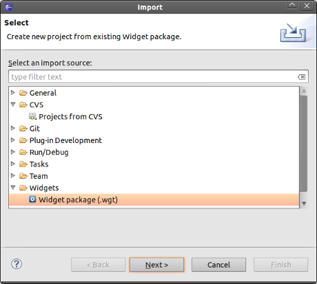
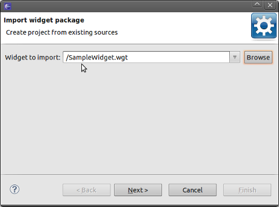
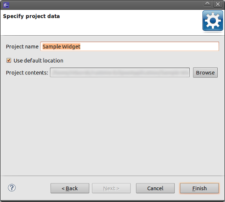

Importing a widget package
If you want edit an existing widget (.wgt package), you can
import it as a new project.
- To import a widget package into Eclipse, go to File
> New > Import 
- Choose Widgets/Widget package (.wgt) to open the
Import
Widget wizard.

- Click the Browse button and choose a widget
file from the file system.
- Press the Next button.
- Choose a project name (by default it is based on the name from
Widget config.xml file).

- Press the Finish button.